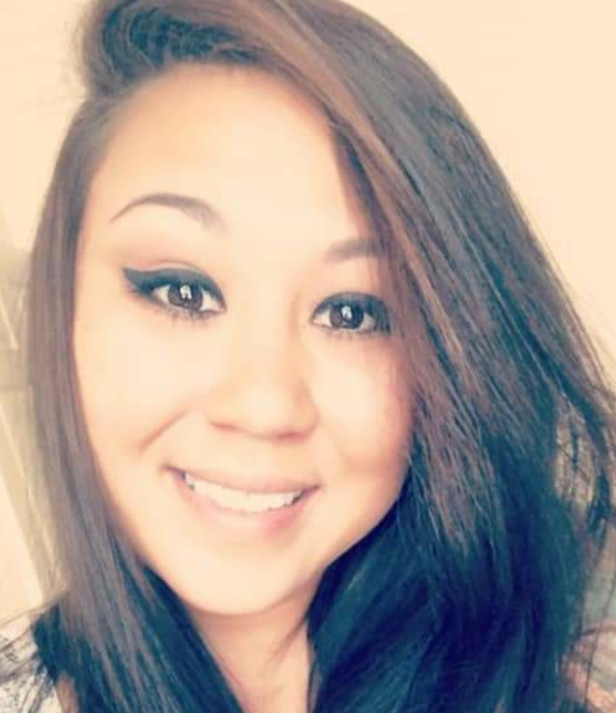
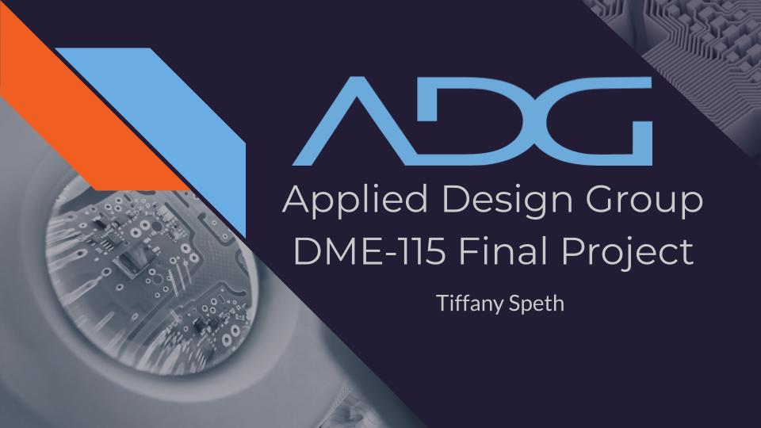

Tiffany Speth
UI/UX and Web Design Student
Welcome to my UI/UX and Web Design student resume page! I am excited to share my portfolio and experience with you as I continue to develop my skills in the field of user interface and user experience design, as well as web design. Here, you will find examples of my work that I have created during my school experience. I am constantly learning and growing in this industry, and I am eager to apply my knowledge and passion to new projects and challenges. Thank you for taking the time to review my resume, and I look forward to the opportunity to work with you.
Featured Projects
View selected projects below. More information can be found at tiffanydoesdesign.com.
Final Project for DME-115 Graphic Design Tools
A test of the tools, concept, skills, and delivery for all we learned over the course for a fictional business of choice. "Applied Design Group" was a new company looking for a minimalist take on tech and professionalism.
View projectFinal Project for WEB-110 Web Design

This assignment was to create a responsive landing page for a fictitious company's event utilizing HTML and CSS that included an interactive map, a registration sign-up form, a calendar invite, and a registration confirmation page.
View projectWork Experience
Please click the link below to access my resume
Education
Wake Technical Community College - Raleigh, NC
Information Technology: UX and Web Design -- Summmer 2022 - Present
Information Technology: Web Designer -- Summmer 2022 - Present